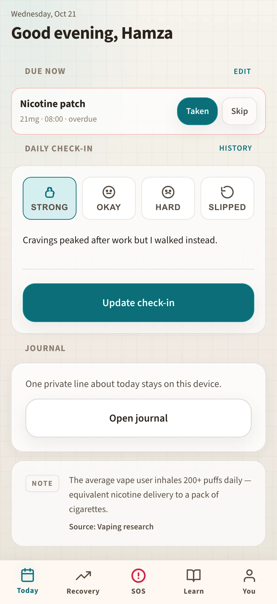

Illustrative story Illustrative story. People and data are fictional.
SteadyCap · Islamabad, Pakistan
How Hamza stays steady through exam week
Hamza is a student who hates streak shaming. He checks in on his phone, uses Knowledge on a shared iPad at the hostel, and keeps SOS on the laptop he studies on.
“Support is one tap. No lecture.”

Before and after
Illustrative numbers from a fictional week.
Before
After SteadyCap
A day with Hamza
-
Quick check-in
Between classes Hamza opens Today on his phone — he missed yesterday during a midterm, and the screen does not turn red or lecture him about streaks.
-
Learn something small
On the hostel iPad he reads a short Knowledge card about sleep debt, bookmarks nothing flashy, just something he can try tonight without buying a course.
-
Study laptop, SOS ready
His study laptop stays open to SOS while he revises; roommate is the contact. Knowing the button exists is half the calm.
-
One line journal
In bed he writes one honest sentence on the phone journal — exam dread, not a performance — then locks the screen.
-
Close the day
He puts the phone face-down. The app does not nag him for a second check-in or a perfect week.
Watch it
A day across devices — silent walkthrough with captions. No autoplay with sound.
Read transcript
Hamza checks in on phone, reads Knowledge on iPad, keeps SOS on laptop, journals once. Fictional exam-week sample.
Features Hamza uses
Illustrative story. People and data are fictional.